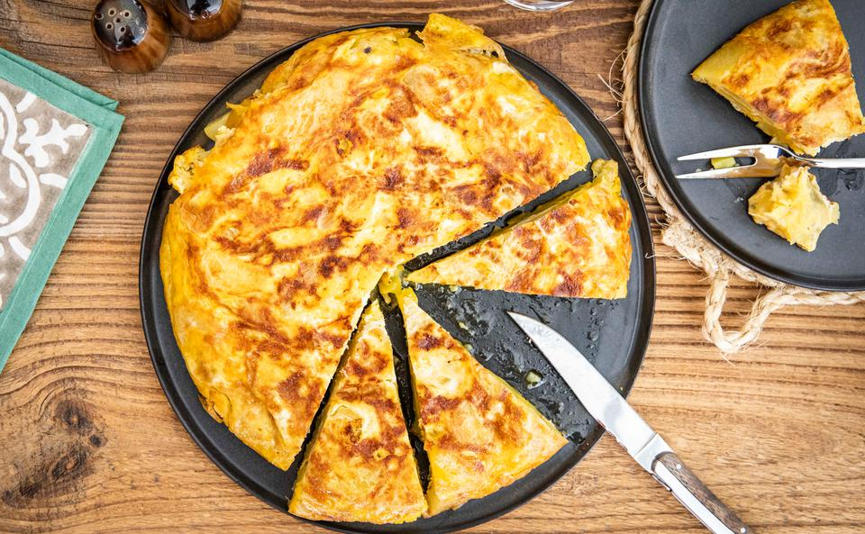

Tortilla de patatas
Best easy recipe
Prep time: 10 minutes
Cook time: 20 minutes
Total time: 30 minutes
Instructions
- Add olive oil to a 10 or 12 inch skillet over medium heat. (It’s best to use a skillet that is at least 1 ½ inches deep.)
- Add sliced potato and onion to the pan; they should be mostly covered with olive oil (add a little more oil if needed).
- Season with 1 ½ teaspoon sea salt.
- Cook on medium-high heat, maintaining a gentle boil, for 8-12 minutes, turning occasionally, until potatoes are just fork tender. Don’t overcook them!
- Drain potatoes, reserving oil for later use. Taste and season potatoes with more salt, if needed. Allow them to cool for a few minutes.
- Meanwhile crack the eggs into a bowl and season with about ½ teaspoon of salt. Beat the eggs together and pour over the cooked potatoes and onion and toss to coat.
- Add a little bit of oil to the bottom of a 10-inch non-stick skillet over high heat. Once hot, pour potato mixture into it and cook on high heat for 1 minute. Reduce heat to medium-low and cook for about 5 minutes.

Ingredients
- Olive oilThe potatoes are cooked in a generous amount of oil, and the oil can be strained and reused 2-3 more times in the future.
- Yukon Gold Potatoes Waxy potatoes with a lower starch content work best (like Yukon gold, or red potatoes) because they hold their shape when boiled. Peel the potatoes and use a knife or mandolin to slice them into uniform ¼ inch thick slices.
- OnionI like to use yellow onion, but white onion would also work well.
- Eggs
- Crushed sea salt